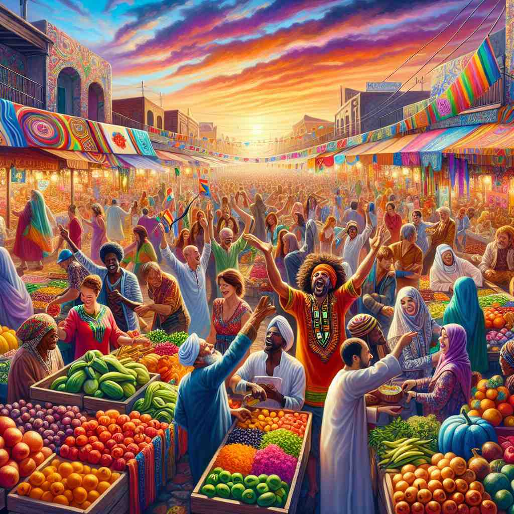

💬 The market is filled with vivid colors that attract many visitors. 市场上充满了吸引众多游客的鲜艳色彩。
💬 The garden is full of vivid colors from the beautiful flowers. 花园里从美丽的花朵中绽放出丰富的色彩。

💬 The beach is beautiful because of the vivid sunset. 海滩因为生动的日落而美丽。
💬 The garden is full of vivid colors that make it beautiful. 花园里充满了生动的色彩，使其显得美丽。
🧠 想象 'vivid' 是一个能让事物在你脑海中呈现得异常清晰、生动的魔法词。无论是颜色、记忆、描述还是感受，只要用 'vivid' 来形容，就意味着它们都有一种鲜明、强烈、令人印象深刻的特质。这个核心概念贯穿了 'vivid' 的所有用法，帮助你更容易理解和记忆它的多重含义。
🔈 ['vɪvɪd]
🗝️ adj. producing very clear, powerful, and detailed images in the mind 在脑海中产生非常清晰、强烈和细致的图像
🎭 在一个温馨的夜晚，孩子们围坐在老奶奶的身边，专心听她讲述过去小镇的故事。她的描述栩栩如生，仿佛每个人都能在脑海中看到那时的景象、听到市场的喧闹声，和闻到面包的香气，让每一个细节都鲜活地浮现出来。
💬 She has vivid memories of her childhood in Africa. 她对在非洲的童年记忆犹新。
🌳 由词根 "viv-"（生命，活力）加上形容词后缀 "-id" 组成，构成一个形容词，表示 "生动的，鲜明的"。
🕸️ 1.vital: 重要的，生命的 2.vivacious: 活泼的 3.revive: 复活，复苏
💡 记忆 "vivid" 时，可以联想为 "vivacious" 和 "image" 的结合，通过想象一个活灵活现的画面来帮助记忆，使其更加生动鲜明。